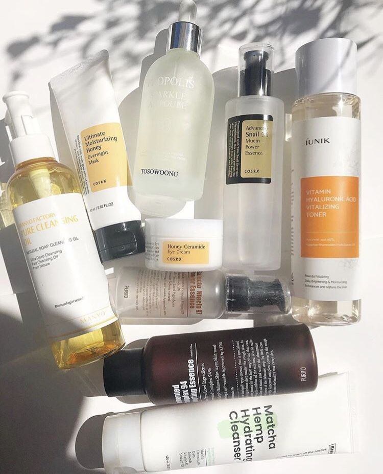

Discover trending Korean beauty products, glowing skin routines, and gentle ingredients loved worldwide.

Korean skin care focuses on hydration, healthy glowing skin, and protecting the skin barrier using gentle lightweight products.
Korean beauty routines often include cleansing oils, water-based cleansers, toners, essence serums, moisturizers, and sunscreen.
A basic Korean skin care routine may include: cleanser, toner, serum, moisturizer, and sunscreen.